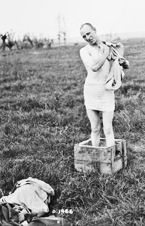

|
JANUARY The Canadian Corps takes up position on the
stretch of front running from Saint-Eloi (France) to Ploegsteert
Wood (Belgium), where it spends a grim winter.
 Charles's unit is
at Houplines, in France, very close to the Belgian
border, north-west of Armentières. The weather is
generally dark and rainy. The men wade through the
mud. Almost every day his artillery unit fires about a
hundred salvoes at various targets. Only fog can
stop the firing. Charles's unit is
at Houplines, in France, very close to the Belgian
border, north-west of Armentières. The weather is
generally dark and rainy. The men wade through the
mud. Almost every day his artillery unit fires about a
hundred salvoes at various targets. Only fog can
stop the firing.
For the first time the Canadians wear the new steel
helmet, designed to protect soldiers from shell
splinters, since head wounds caused many
casualties on the battlefield. The Lewis machine gun
is added to the soldiers' weapons. (in
the photo opposite, the bag worn in front on the chest
holds the gas mask)
FEBRUARY
The firing is lighter; some days there is none at
all, especially when the winds are too strong. On February 16 the
guns end up under water and are moved to
higher ground.
ON FEBRUARY 28, 1916, CHARLES TURNS 23. The weather
is fine and cool;
Charles has been a soldier
for more than twenty months and has not yet had any leave.
 Of course Charles is not always in combat. Usually
there is a rotation: four days at the front, four days in the communication
trench, in direct support if needed, and
four days
behind the lines. Charles can then eat better meals, clean
up, rest and write his letters. The soldiers play
cards.
One group forms the
"Dumbells Concert Party". They put on comic shows
that delight the troops.
Even behind the lines the soldiers have
training sessions and
fatigue duties, but they can also visit other units or the
nearby
village. After
drawing their pay, they go to estaminets run
by civilians, little restaurants that generally serve fried eggs, chips and
watered-down beer.
All the same, these few days behind the front
are no holiday: the guns thunder, comrades share their experiences, and the focus is always on the war.
MARCH
Light firing continues every day. In the middle of the month,
Houplines is shelled. On March 30 and 31 the 1st Canadian Heavy
Battery, divided into two sections, moves north,
crosses the Belgian border, to a new position west
of Ypres. There the Canadians fight in
various assaults, the aim being to keep the Germans
busy while the British prepare the Battle of
the Somme. With the French army having been
decimated at Verdun in February, a greater share of the burden
of the war effort now rested on British
shoulders.
APRIL
The firing is moderate, except on a few days in the month when it
is heavier.
CHARLES'S FIRST HOSPITAL STAY
 On April 30 Charles is
sent to field ambulance #3,
that is, tents set up at Wippenhoek, near
Steenvoorde. Even though this hospital is behind the
front, gas shells explode several times in the
immediate area. Charles is quickly transferred to
field ambulance #2,
then located in a requisitioned house at Vzamertingne,
Bedford House. Twenty-nine wounded and
twenty-seven sick men are being treated there,
Charles among them. On April 30 Charles is
sent to field ambulance #3,
that is, tents set up at Wippenhoek, near
Steenvoorde. Even though this hospital is behind the
front, gas shells explode several times in the
immediate area. Charles is quickly transferred to
field ambulance #2,
then located in a requisitioned house at Vzamertingne,
Bedford House. Twenty-nine wounded and
twenty-seven sick men are being treated there,
Charles among them.
According to his medical file, he is suffering from
"Cervical Adenitis A229". Note
that illnesses and wounds were identified by
numbers in official reports, and in the statistics drawn
from them, to guard against spies. (
According to a Google search: "Cervical
Adenitis is a bacterial infection of the lymph nodes of the neck";
today this illness is treated with antibiotics,
but they did not exist in 1916, so? )
MAY
On May 11 Charles rejoins his unit, having been discharged from
hospital. When he gets back,
things are still the same: light firing every
day. On May 16, the right section changes position
because it is constantly being shelled. On May 30, no
firing; they are getting ready to move. At noon, the unit moves south
to Neuf Berquin. The next day the march continues, arriving
late in the afternoon near Bully Grenay. The
guns are ready early in the evening to shell
Vimy Ridge.
JUNE From
June 1 to 14 the unit keeps up heavy fire, on average more
than 300 a day, including more than 900 salvoes on June 2. In
mid-June, the 1st Canadian Heavy Battery is detached from the
Canadian Corps and ordered to join other British artillery
units in the Somme region.
On the
night of June 15 Charles's unit goes "out of
action" and joins the horse lines at
the rear. They get ready to move, but this time by
train, since the journey is long.
The trip takes more than 12 hours;
the unit reaches Amiens station late
in the afternoon of June 16. A few hours later it sets
out for its new position. The men and guns
are in place by late afternoon on June 17. Charles's
battery is now in the 23rd Horse Artillery Group,
XV Corps.
The guns are calibrated
with a few rounds, then, during the last week of June,
heavy fire is laid on the enemy trenches, including 776
salvoes on June 26, 880 on June 27, 928 on June 28,
and 558 on June 29... An infernal pace... But
it is only the beginning...
|